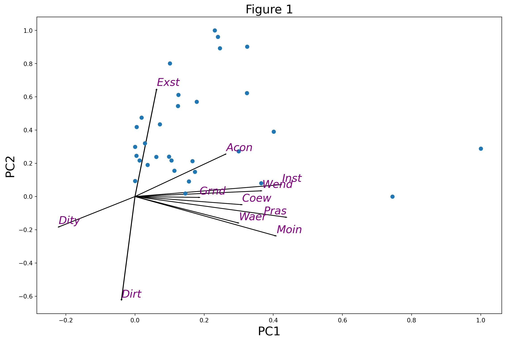

import numpy as np
import pandas as pd
import matplotlib.pyplot as pltPCA With Python
import require libraries
create a pca model
from sklearn.preprocessing import StandardScaler
from sklearn.decomposition import PCA
import plyer
## get path
pathh = plyer.filechooser.open_file()[0]implement Model
dat = pd.read_excel(pathh)
dat.shape
index = dat['RTO_Name'].values
ind = [2, 3, 8, 9, 10, 11, 12, 13, 14, 15, 16]
dat2 = pd.DataFrame(dat.iloc[:, ind])
dat2.index = index
dat2
## To define a standardizer for the data
scaler = StandardScaler() C:\Users\habib\AppData\Local\Programs\Python\Python311\Lib\site-packages\openpyxl\worksheet\header_footer.py:48: UserWarning:
Cannot parse header or footer so it will be ignored
colNames = dat2.columns
Index = dat2.index
dat_scaled = pd.DataFrame(scaler.fit_transform(dat2), columns = colNames,
index = Index)
dat_scaled| Distance to city | Coast view | Distance to airport | Water | Mountain | Access to recreation | Indigenous forest | Exotic forest | Wetland | Protected areas | Grassland | |
|---|---|---|---|---|---|---|---|---|---|---|---|
| Northland | -0.686103 | 1.586737 | -0.742950 | -0.612804 | -0.782828 | 1.610523 | 0.097830 | 1.921760 | 1.681944 | -0.288129 | 0.703268 |
| Auckland | 1.642576 | 1.042838 | 1.453905 | -0.791149 | -0.782828 | 1.248176 | -0.521973 | -0.193935 | -0.117435 | -0.599138 | -0.413467 |
| Waikato | 1.460370 | -0.253715 | 0.325011 | -0.198949 | -0.722732 | 0.756420 | 0.123552 | 1.439688 | 0.221058 | -0.292149 | 1.910050 |
| Coromandel | 1.122623 | 0.435060 | 0.937476 | -0.744737 | -0.746784 | 0.161136 | -0.314260 | -0.410327 | -0.437439 | -0.402754 | -1.011192 |
| Coastal Bay of Plenty | 0.082717 | -0.483791 | -1.021791 | -0.721735 | -0.628414 | 0.083490 | 0.208546 | 1.627785 | -0.443297 | -0.469362 | -0.857253 |
| Rotorua | 0.513789 | -0.790882 | -0.784969 | 0.124169 | -0.762075 | -0.874141 | -0.556055 | 0.067029 | -0.605130 | -0.626512 | -1.057294 |
| Taupo | -0.006164 | -0.790882 | -1.367395 | 2.131880 | -0.527693 | 1.921105 | -0.134862 | 2.537547 | -0.132630 | -0.285582 | -0.872732 |
| Gisborne | -1.712677 | 0.342334 | -2.494167 | -0.502331 | 0.174644 | -0.744731 | 0.536604 | 1.992106 | -0.523847 | -0.129995 | 0.016901 |
| Hawke's Bay | -1.339378 | 0.068866 | -1.830211 | -0.136521 | -0.124518 | 0.782302 | 0.081913 | 1.284276 | -0.267369 | -0.331107 | 1.009243 |
| Ruapehu | -0.241699 | -0.790882 | -1.195866 | -0.719512 | -0.683906 | 0.394073 | 0.046514 | -0.194476 | 0.054649 | -0.195076 | -0.397781 |
| Taranaki | -0.761652 | -0.315437 | -1.170520 | -0.700275 | -0.719424 | 0.005844 | 0.211963 | -0.625114 | -0.622521 | -0.230316 | -0.069157 |
| Whanganui | -0.694991 | -0.711205 | -0.638488 | -0.712298 | -0.782822 | -1.417661 | -0.480049 | -0.542324 | -0.718449 | -0.577364 | -1.069369 |
| Manawatu | -0.241699 | -0.759218 | -0.149954 | -0.700139 | -0.659114 | -1.262369 | -0.640070 | -0.855736 | -0.693552 | -0.603903 | -0.646857 |
| Wairarapa | 0.989302 | -0.179253 | 1.000356 | -0.336734 | -0.621974 | -1.029432 | -0.426790 | -0.171011 | -0.565587 | -0.427922 | -0.276159 |
| Wellington | 1.731457 | -0.287360 | 1.609405 | -0.794280 | -0.663815 | 0.083490 | -0.415951 | -0.719367 | -0.613551 | -0.568114 | -1.236987 |
| Marlborough | 0.340471 | 1.985651 | 0.415818 | -0.357105 | 1.251240 | 0.109372 | 0.040651 | 0.234919 | -0.403388 | 0.531133 | 0.242280 |
| Nelson Tasman | -0.659439 | 0.066182 | -0.492312 | -0.433914 | 0.680182 | 0.937593 | 1.180509 | 0.966852 | -0.085032 | 0.901347 | -0.754703 |
| West Coast | -0.917193 | 0.911825 | -0.200559 | 1.767386 | 3.543260 | 2.619917 | 4.281577 | -0.280869 | 3.798765 | 4.225748 | 0.506587 |
| Kaikoura | 0.024944 | -0.441983 | 0.139734 | -0.736888 | -0.295203 | -1.236487 | -0.655901 | -0.953673 | -0.717534 | -0.428481 | -1.150367 |
| Hurunui | 0.655998 | -0.461589 | 0.735354 | -0.242412 | 0.348016 | -0.925904 | -0.275464 | -0.393478 | -0.621240 | 0.002759 | 0.406527 |
| Canterbury | 1.007078 | 0.290866 | 1.096842 | 2.188636 | 1.043728 | 0.937593 | -0.225364 | -0.319415 | 0.352501 | 0.364135 | 2.484867 |
| Timaru | -0.090601 | -0.722779 | 0.102320 | -0.531367 | -0.529597 | -1.391779 | -0.689324 | -0.829078 | -0.645405 | -0.569832 | -0.701560 |
| Mackenzie | -0.779428 | -0.790882 | -0.273799 | 1.329440 | 0.442936 | -1.081196 | -0.671121 | -0.862024 | -0.463984 | -0.106960 | 0.403960 |
| Waitaki | 0.224926 | -0.572226 | 0.112008 | -0.055447 | 0.112961 | -0.925904 | -0.653659 | -0.737150 | -0.180777 | -0.300214 | 0.530434 |
| Central Otago | 0.402688 | -0.790882 | 1.009902 | -0.481597 | 0.331983 | 0.187018 | -0.690384 | -0.889893 | 1.063173 | -0.373206 | 1.503276 |
| Wanaka | -1.019407 | -0.790882 | 1.032463 | 1.059540 | 0.317922 | -0.460030 | -0.464954 | -0.968508 | -0.647968 | -0.064301 | -0.517491 |
| Queenstown | -0.948302 | -0.790882 | 1.684426 | 0.824257 | 0.451035 | -0.408266 | -0.528939 | -0.941932 | -0.565038 | -0.265253 | -0.402185 |
| Dunedin | 1.740345 | -0.291409 | 0.025501 | -0.770189 | -0.730655 | 0.497601 | -0.681868 | -0.684735 | -0.228192 | -0.596843 | -0.566696 |
| Clutha | 0.927085 | -0.381890 | 0.082201 | -0.570520 | -0.714932 | -0.097683 | -0.489586 | 0.276789 | 0.009614 | -0.503719 | 0.039331 |
| Southland | -0.690547 | 0.943797 | 0.287143 | -0.291138 | 0.199830 | -0.123565 | 0.374117 | 0.179032 | 2.516736 | 0.482781 | 2.479312 |
| Fiordland | -2.077089 | 3.723873 | 0.313117 | 2.716731 | 2.581575 | -0.356502 | 2.332801 | -0.954737 | 0.600925 | 2.728328 | -0.234787 |
Obtaining all the main components
from sklearn.preprocessing import MinMaxScaler
scaler2 = MinMaxScaler(feature_range=(0, 1))
pca = PCA(0.8)
pca.fit(dat_scaled)
pca.n_components_ ## The number of components that cover 90% of the variance
Loading = pca.components_
temp1 = np.repeat("PC", 4); temp2 = [1, 2, 3, 4]
temp3 = list(map(lambda x, y: x + str(y), temp1, temp2))
df_loading = pd.DataFrame(Loading.T, index = colNames, columns = temp3)
df_loading| PC1 | PC2 | PC3 | PC4 | |
|---|---|---|---|---|
| Distance to city | -0.219206 | -0.181906 | 0.574417 | -0.310554 |
| Coast view | 0.306437 | -0.048555 | 0.043187 | -0.242322 |
| Distance to airport | -0.038953 | -0.620115 | 0.317013 | -0.104865 |
| Water | 0.297139 | -0.158074 | -0.142196 | 0.204141 |
| Mountain | 0.405449 | -0.235702 | -0.152537 | 0.041566 |
| Access to recreation | 0.260759 | 0.253984 | 0.457195 | -0.292648 |
| Indigenous forest | 0.420337 | 0.070839 | -0.095976 | -0.263878 |
| Exotic forest | 0.062256 | 0.642903 | 0.176965 | -0.028062 |
| Wetland | 0.363113 | 0.034148 | 0.304077 | 0.114888 |
| Protected areas | 0.435472 | -0.124187 | -0.108149 | -0.160795 |
| Grassland | 0.183865 | -0.005248 | 0.412894 | 0.771571 |
create biplot
from adjustText import adjust_text
#| fig-width: 9
#| fig-height: 9
Scores = pca.transform(dat_scaled)
df_score = pd.DataFrame(scaler2.fit_transform(Scores[:, 0:2]),
index = index, columns = ["PC1", "PC2"])
def abbreviate(strings, length = 14):
if len(strings) > length:
res = strings[:length]
else:
res = strings
return res
fig, ax = plt.subplots(figsize=(14, 9))
for i, feature in enumerate(df_loading.index):
ax.arrow(0, 0, df_loading.iloc[i, 0],
df_loading.iloc[i, 1])
Texts = [ax.text(df_loading.iloc[i, 0] * 1.01,
df_loading.iloc[i, 1] * 1.01,
abbreviate(feature), fontsize=18, color = "purple",
style = "italic") for i, feature in enumerate(df_loading.index)]
adjust_text(Texts)
ax.scatter(df_score.PC1, df_score.PC2)
ax.set_xlabel('PC1', fontsize=20)
ax.set_ylabel('PC2', fontsize=20)
ax.set_title('Figure 1', fontsize=20)
plt.show()